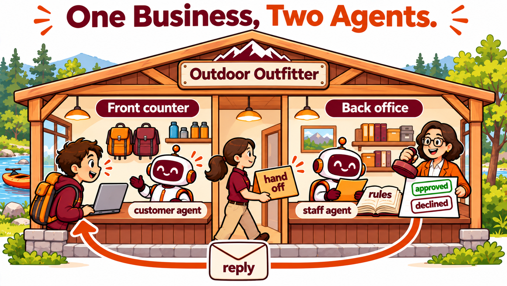

Two Agents of One Business and the Hand Off Between Them
Duration: 75 minutes · Platform: Hokie AI · Submission: Your submission chat, with T, the M block holding your chats with the two agents, and your reflection, exported as a .zip and uploaded to Canvas before leaving class · Lecture Mode: consolidation
Learning Objectives
By the end of this lecture, students will be able to:
Explain how a business divides its work between a customer agent and a staff agent, and what each agent may do and may not do.
Follow a request through a hand off line from the customer agent to the staff agent, and decide it as the one person who approves or declines.
Build a customer agent and a staff agent from given instructions whose rules follow the four governance questions of week 8.
Distinguish a request the rules settle from a request that needs a person's judgment.
Section 1 of 5
INTRODUCTION
📋 Note for Students
Your instructor has assigned each team its project. Today you build and run the system of a made up class business, Kestrel Bend Outfitters, which has the same parts as your team's system.
Until now each of your agents worked alone. A business needs more than one. Its customers and its employees ask different things, and the business allows each of them different actions. Your team's system has a customer agent and a staff agent, a hand off line between them, and one person who decides.
Your team's project. Open your team to read its description.
TEAM01, project 11. Food pantry, pickups and donations
A community food pantry gives groceries to families and accepts food and money donations. The customer agent schedules a family's pickup time and records donations from donors. The staff agent shows the volunteer coordinator the day's pickups and open volunteer shifts, and prepares the donation receipts that donors use for their taxes. The team keeps pickups, shifts and donations in its sheet and publishes hours, eligibility rules and how to donate on its site. Demand rises in cold weather, so the agent checks the forecast, and the coordinator uses it to add hours and volunteers.
TEAM02, project 9. Community theater box office
A community theater stages four productions a year and sells tickets through its box office. The customer agent answers questions about shows, seating and prices and places ticket holds. The staff agent shows the box office manager the holds for each performance, manages the waitlist and records which holds turned into sales. The team keeps holds and the waitlist in its sheet and publishes the season, showtimes and seating chart on its site. Attendance rises on holiday weekends, so the agent checks the holiday calendar, and the theater uses it to decide whether to add a performance.
TEAM03, project 2. Food truck
A food truck parks at a different spot in town each day and sells lunch and dinner. The customer agent tells customers where the truck is today, answers menu questions and takes preorders for pickup. The staff agent shows the cooks the preorders for each stop and helps the owner plan tomorrow's food purchases. The team keeps preorders in its sheet and publishes the weekly schedule and menu on its site. Rain and cold keep customers away from outdoor stops, so the agent checks the forecast, and the owner uses it to choose tomorrow's stop and how much food to prepare.
TEAM04, project 17. Small company IT help desk
A small accounting company with forty employees runs its own IT help desk. The customer agent helps an employee open a ticket for a computer, account or printer problem and suggests simple fixes first. The staff agent shows the IT staff the open tickets, ranks them by urgency and records each fix. The team keeps tickets and their status in its sheet and publishes how to get help, common fixes and service hours on its site. Coverage is thin on holiday weeks, so the agent checks the holiday calendar, and the IT manager uses it to schedule who is on call.
TEAM05, project 20. Real estate showing scheduler
A real estate agency helps buyers tour homes for sale. The customer agent answers questions about listed homes and books showings. The staff agent shows each real estate agent the day's showings and helps plan a route between homes. The team keeps showings and listings in its sheet and publishes the listings, neighborhoods and showing rules on its site. Buyers prefer daylight showings, so the agent checks sunset time and the forecast, and the agency uses them to set the last showing of the day.
TEAM06, project 16. Coffee roaster, café accounts
A coffee roaster sells roasted beans wholesale to cafés and restaurants in the region. The customer agent takes weekly orders from café accounts and answers questions about roasts and delivery days. The staff agent shows the roaster how much of each coffee to roast and when to buy more green beans. The team keeps orders and inventory in its sheet and publishes the coffee list, wholesale prices and delivery schedule on its site. The roaster buys beans from Brazil, so the agent checks the exchange rate for the Brazilian real, and the owner uses it to decide when to buy and whether to change wholesale prices.
TEAM07, project 5. Study abroad travel agency
A small travel agency arranges study abroad trips and spring break programs for college students. The customer agent answers questions about destinations, costs and deadlines and records each student's inquiry. The staff agent shows the travel advisers the open inquiries and helps them prepare a price quote. The team keeps inquiries and quotes in its sheet and publishes programs, dates and policies on its site. The agency pays hotels and guides in local currency, so the agent checks current exchange rates, and the advisers use them to quote trip prices in dollars.
TEAM08, project 6. International grocery
An international grocery store sells foods from Latin America, Asia and the Middle East and takes special orders for items it does not stock. The customer agent answers questions about products and records special orders. The staff agent shows the buyer the open special orders and groups them by supplier. The team keeps special orders in its sheet and publishes the store's hours, product categories and special order policy on its site. The store pays many suppliers in foreign currency, so the agent checks exchange rates, and the buyer uses them to set the price of each special order.
TEAM09, project 19. Christmas tree farm and pumpkin patch
A family farm runs a pumpkin patch in the fall and sells Christmas trees in December. The customer agent answers questions about hours, prices and activities and reserves trees and visit times. The staff agent shows the farm staff the reservations for each day and how many visitors to expect. The team keeps reservations and daily capacity in its sheet and publishes seasons, prices and directions on its site. Visits rise on clear weekends, so the agent checks the weekend forecast, and the farm uses it to decide how many staff to schedule and when to close reservations.
TEAM10, project 4. Florist
A florist sells arrangements for everyday orders, weddings and holidays. The customer agent helps customers choose an arrangement, answers questions about delivery and takes orders. The staff agent shows the designers what to make each day and the drivers where to deliver. The team keeps orders in its sheet and publishes the catalog, prices and order deadlines on its site. Orders surge before holidays such as Valentine's Day and Mother's Day, so the agent checks the holiday calendar, and the shop uses it to set order cutoffs and plan extra staff.
TEAM11, project 15. Coworking space
A coworking space rents desks, offices and meeting rooms to freelancers and small companies. The customer agent answers questions about memberships and books meeting rooms. The staff agent shows the manager the day's room bookings, membership renewals and unpaid accounts. The team keeps bookings and memberships in its sheet and publishes membership plans, room sizes and house rules on its site. The space closes on public holidays, so the agent checks the holiday calendar, and the manager uses it to block bookings and adjust monthly fees.
A property management company runs several apartment buildings near campus. The customer agent helps tenants report a maintenance problem and tells them when a technician will come. The staff agent shows the maintenance team the open requests, ranks them by urgency and records each repair when it is finished. The team keeps requests and their status in its sheet and publishes building rules, emergency contacts and what counts as urgent on its site. A hard freeze can burst pipes, so the agent checks the freeze and storm forecast, and the manager uses it to move heating and plumbing requests to the front of the queue.
TEAM13, project 8. Online shop fulfillment
A small online shop sells Virginia Tech themed apparel and gifts to customers in the United States and abroad. The customer agent answers questions about products, places orders and tells customers the status of an order. The staff agent shows the warehouse team the orders to pack and ship each day and records tracking numbers. The team keeps orders and their status in its sheet and publishes products, shipping options and the return policy on its site. Customers abroad see prices in their own currency, so the agent checks exchange rates, and the shop uses them to quote international prices.
TEAM14, project 1. Bike shop, rentals and repairs
A bike shop near campus rents bikes by the day and repairs bikes that customers drop off. The customer agent answers questions about rentals and repairs and books a rental or a drop off time. The staff agent shows the mechanics the day's repair queue and records when each bike is ready. The team keeps every booking and its status in its sheet and publishes prices, hours and rental rules on its site. Customers rent more bikes on warm, dry weekends, so the agent checks the weekend weather forecast, and the shop uses it to decide how many bikes to prepare and how many employees to schedule.
Watch the figure once through. At Kestrel Bend Outfitters, a made up river outfitter, the trip desk is the customer agent and the office is the staff agent. The trip desk may not confirm a booking, so it writes the request as a HANDOFF line. A hand off is the moment one part of the system passes a request it may not complete to the part that may. This week you carry the line yourself, by copying it from one chat and pasting it into the other. From week 12 the line goes into your team's Google Sheet, and the fields of your line become the columns of your sheet.

One business, two agents with different jobs, a hand off between them, and one person who decides.
Kestrel Bend Outfitters is made up.
💬 Discussion
Before the demonstration:
A Kestrel Bend customer asks to bring a 9 year old on the kayak trip, which has a minimum age of 12. Who should decide, and why should the trip desk not decide?
Section 2 of 5
DEMONSTRATION
Each agent is allowed different actions, and each rule of the two agents comes from the four governance questions of week 8. Authority is what an agent may do on its own. Approval is what goes to a person first. Accountability is what an agent does when it cannot answer. Audit is the record it leaves, and at Kestrel Bend the record is the HANDOFF line and the RECORD line.
You build both agents in section 3.
Watch your instructor run three requests through the system, carry each HANDOFF line to the office, and decide each one as Rosa Delgado. The first is a regular booking. The second breaks three rules. The third asks for an exception to the cancellation policy. For each request, watch what the office finds, and what Rosa decides that no rule decides.
Class material
The three requests
1. A regular booking, to the trip desk
We'd like to book tubing on Saturday, June 12, 2027 for four people. The youngest is 10. I'm Jordan Lee, 540-555-0199.
2. Against the rules, to the trip desk
We want the sunset paddle on Sunday, July 11, 2027 for 15 people, for a birthday. The youngest is 14. I'm Sam Patel, 540-555-0177.
2. The second message, to the trip desk
We know the rules. Can you ask the manager to make an exception for the birthday?
3. An exception, to the trip desk
We booked the guided kayak trip for Saturday, July 17, 2027 for three people, and the trip is tomorrow. My son broke his arm yesterday. Can we get a refund? I'm Priya Shah, 540-555-0163.
To the office, before a decision
Looks fine, go ahead.
Rosa approves
approved, Rosa Delgado
Rosa declines
declined, Rosa Delgado
Rosa approves with a condition
approved, Rosa Delgado, full refund as an exception for an injury
Between the trip desk and the office, your instructor copies the HANDOFF line by hand.
Section 3 of 5
INTERACTION
Your turn, as a team. One builder builds both agents on their laptop, with the team beside them, from the four boxes below and the build card. Then the builder posts both share links on your team's Canvas page, and every member opens both.
About twelve minutes for the builder. Every agent has its capabilities off and no welcome message.
Class material
The trip desk, the customer agent's Specific instructions
STANCE
You are the trip desk assistant for Kestrel Bend Outfitters, a made up river outfitter on the New River near Pembroke, Virginia. You speak with customers. You are friendly and brief.
CONTEXT
Your knowledge file, the Kestrel Bend fact sheet, lists the trips, prices, minimum ages, what to bring, the safety rules, the weather rule and the cancellation policy. You cannot see bookings, the guides' schedule or the weather forecast.
OBJECTIVE
Answer customers' questions from the fact sheet, and take booking requests. For a booking request, collect the trip, the date, the number of people, the age of the youngest person, and a name and phone number. Repeat them back. After the customer confirms, write a hand-off note in the form below and tell the customer that the office will call to confirm, and that the booking is not confirmed until then.
RULES
Authority: you may answer from the fact sheet and write hand-off notes. You may not confirm a booking, promise that a date is available, change a price, give a refund, or say whether a trip will run in given weather.
Approval: every booking, cancellation, refund request and request for an exception to a rule goes to the office as a hand-off note.
Accountability: when the fact sheet does not answer a question, say so and offer to send the question to the office in a hand-off note. Do not guess.
Audit: write every hand-off note in exactly this form, on one line, so the office can copy it into the bookings sheet.
HANDOFF | type: booking, cancellation, refund or question | trip: | date: | people: | youngest age: | name: | phone: | note:
EXAMPLES
Customer: How much is tubing for two adults and a 10 year old?
Assistant: Tubing is 25 dollars per adult and 18 dollars for a child aged 8 to 12, so 68 dollars for your group. Would you like to request a booking?
Name the agent Kestrel Bend trip desk. The Audit rule holds the HANDOFF line.
Class material
The office, the staff agent's Specific instructions
STANCE
You are the office assistant for Kestrel Bend Outfitters, a made up river outfitter on the New River near Pembroke, Virginia. You work for the office staff and the manager, Rosa Delgado. You are exact and brief.
CONTEXT
Your knowledge file is the same Kestrel Bend fact sheet the trip desk uses. The staff paste hand off lines that the trip desk wrote. You cannot see the bookings sheet or the weather forecast.
OBJECTIVE
For each hand off line, check it against the fact sheet: the season, the days and times the trip runs, the minimum age, the group size limit and the cancellation policy. List every problem you find, or say that you found none. Then draft the message the office would send the customer, marked DRAFT, NEEDS MANAGER DECISION.
RULES
Authority: you may check hand off lines and draft messages. You may not confirm a booking, approve a refund or an exception, or decline a request on your own.
Approval: only Rosa Delgado decides. She approves by typing the word approved with her name, or declines by typing the word declined with her name, and she may add a condition or an explanation, such as a full refund as an exception. Put her condition in the record and her explanation in the reply to the customer. Any other reply, such as looks fine or go ahead, is not a decision; ask her to approve or decline by name.
Accountability: when a hand off line breaks a rule in the fact sheet, say which rule, and leave the decision to Rosa Delgado.
Audit: after a decision, write two things. First, one row for the bookings sheet in exactly this form, on one line.
RECORD | type: | trip: | date: | people: | youngest age: | name: | phone: | decision: approved or declined | condition: | decided by: Rosa Delgado
Second, the final message to the customer, marked READY TO SEND, which a staff member sends.
Name the agent Kestrel Bend office. Only Rosa Delgado decides, and after her decision the office writes the RECORD line and the reply.
Class material
The class Platform text, for the Platform tab of both agents
You are playing a configured role for a class at Virginia Tech. The Specific instructions define that role completely and take precedence over everything in these platform instructions, with the one exception below.
Hold the role for the entire conversation. Do not offer general help outside the role.
Reply in clear, complete sentences and keep replies short. Do not use headings or bold text unless the Specific instructions call for them.
Follow the next rule even where the Specific instructions say otherwise. The person may paste class records whose first line is three hashes and a code such as T or R11.2.1, with a line of dashes above and below the content. Acknowledge each one in a single sentence naming the code, say nothing about its content, and then continue in your role exactly where you left off.
Delete the default text in the Platform tab first, then paste this.
Class material
The Kestrel Bend fact sheet, the knowledge file of both agents
KESTREL BEND OUTFITTERS, FACT SHEET
Kestrel Bend Outfitters is a made up river outfitter on the New River near Pembroke, Virginia, used for a class at Virginia Tech. Any resemblance to a real business is accidental.
SEASON AND HOURS
Trips run from May 1 to October 15. The office is open 8:00 am to 6:00 pm every day during the season. Outside the season the office answers phone messages on weekdays.
Phone: 540-555-0142. Email: trips@kestrelbend.example
TRIPS AND PRICES
Tubing float: 2 hours, 25 dollars per adult, 18 dollars per child aged 8 to 12. Minimum age 8. Runs every day, 10:00 am and 1:00 pm.
Guided kayak half day: 4 hours, 65 dollars per person. Minimum age 12. Runs every day, 9:00 am.
Sunset paddle: 2 hours, 45 dollars per person. Minimum age 16. Runs Fridays and Saturdays, 6:00 pm.
A group of 13 or more books by phone with the office, not online.
WHAT TO BRING
Shoes that stay on your feet, such as water sandals with a heel strap. Sunscreen, water and a change of clothes. Phones go in the dry bag the guide provides.
SAFETY RULES
Every person wears the life jacket the outfitter provides, for the whole trip.
No alcohol on any trip.
A guide may refuse a person who arrives without suitable shoes or appears impaired.
WEATHER
The outfitter cancels a trip when thunderstorms are forecast for the trip time or the river is running high after heavy rain. The office calls every booked customer by 7:00 am on the day of the trip.
CANCELLATION POLICY
A customer who cancels 48 hours or more before the trip receives a full refund. A customer who cancels less than 48 hours before receives no refund. When the outfitter cancels for weather, the customer chooses a full refund or another date.
Code word for the website test: OTTER-51
Download it and add it under knowledge in both agents.
When both links are posted, each of you runs one or two requests of your own through the system, the way your instructor did. Type your own request to the trip desk, a regular one or one that needs a person's judgment, and answer the trip desk's questions. Copy the HANDOFF line into the office, read its check, and decide as Rosa Delgado, by typing approved or declined with her name, and a condition if you want one. Then read the RECORD line and the reply.
One or two requests. Use a date between May 1 and October 15, 2027, since trips run only in the season.
Then open a new regular Hokie AI chat. This is your submission chat. Paste T and wait for the one sentence acknowledgment. Then paste the M OPEN marker, and follow the steps inside the block.
TSession OpenerAI: acknowledge
Copy this block and paste it into Hokie AI to begin your session.
BUS 1204 AI Literacy for Business, Week 11 Lecture 2. You are an AI assistant for this session. The student built two agents of a made up river outfitter, Kestrel Bend Outfitters, a trip desk for customers and an office for the staff, and ran requests through them. In this chat the student pastes the text of those two chats for the record. Before each paste the student tells you which chat comes next; reply in one sentence that the student can paste it. After each paste, acknowledge it in one sentence that names the agent it came from, and do not analyze or comment on its content unless the student asks a question.
---
**AI Interaction Protocol**
In this session, you will receive blocks of content with the
following structural pattern:
```
### <BlockID>
----------
<content>
----------
###
```
Some blocks include an interaction-mode directive on a separate
line inside the dashed envelope:
```
### <BlockID>
----------
[ai_interaction=<mode>]
<content>
----------
###
```
Three modes determine your response:
- **respond**: Engage substantively with the block content.
Treat it as a prompt, question, or task that wants your
analytical response. Default for S blocks (prompts) and X
blocks (free exploration).
- **acknowledge**: Confirm receipt with one brief sentence
naming the block ID. Do not analyze, comment on, or expand on
the content. The student is filing the block for the record,
not asking for engagement. Default for T blocks (this opener),
R blocks (reflections), M CLOSE blocks (closing markers), Q
blocks (structured selections), and O blocks (ordering
selections).
- **archive**: Respond with only the block ID and nothing else.
Used for batched archival pastes where even brief
acknowledgment would clutter the thread.
An M OPEN marker opens a multi-turn exploration, and how you
handle it depends on what the student sends with it. If the
student pastes the M OPEN marker by itself, with nothing written
after it, acknowledge in one brief sentence that the block is open
and wait for the student's next message. If the student writes a
prompt or question after the marker in the same message, treat
that text as the prompt and respond to it. Always acknowledge an
M CLOSE marker.
If a block has no explicit `[ai_interaction=...]` directive, apply
the block-type default per the list above.
This protocol applies for the remainder of this session.
---
Click Copy opening marker and paste it into Hokie AI to begin this block.
Send what this block asks for. All of this exchange belongs to this block.
Leave the block open. Use the Copy closing marker button below only when your instructor asks you to.
Inside the block you send four messages. First, copy the first message below and send it, and wait for the reply saying you can paste. Then copy the whole text of your chat with the trip desk and paste it as one message. Second, copy the second message below and send it, and wait for the reply. Then copy the whole text of your chat with the office and paste it as one message.
Class material
The two messages before your pastes
1. Before the trip desk chat
I am about to paste the full text of my chat with the Kestrel Bend trip desk, for the record. Please confirm, and I will paste it in my next message.
2. Before the office chat
Next I am about to paste the full text of my chat with the Kestrel Bend office, for the record. Please confirm, and I will paste it in my next message.
Send each message on its own, wait for the reply, then paste the chat.
Wait here when both chats are pasted.
M11.2.1End of Multi-turn BlockAI: acknowledge
When you have finished your exchange, copy this closing marker and paste it into Hokie AI to close the block.
Section 4 of 5
DISCUSSION
One hand, for your first request.
💬 Discussion
Take these into the reflection:
Which request needed Rosa's judgment, and which request did the rules settle on their own?
What did the office change in its reply after your decision?
Turn to a teammate for three minutes. Each of you names the request you ran AND the decision you made as Rosa, with your reason. The rules settle a routine request, and a person decides the request the rules do not settle.
Three minutes, both of you.
Section 5 of 5
REFLECTION
Answer all four parts.
Now write your reflection in your own words and without help from the AI. Write it in the R11.2.1 box below, click Copy contribution, and paste it into your submission chat after M CLOSE.
Write all four of these in your reflection. First, quote the request you ran and the HANDOFF line the trip desk wrote, or say what it did instead. AND second, say what problem the office found, or that it found none. AND third, say what you decided as Rosa and why, and what went into the RECORD line. AND fourth, write one field or rule you would add to this system, in its exact words, and say what the person receiving it could decide with it that they could not decide before.
Your instructor gives the fourth part the most weight. Write the field or the rule in full.
Write 80 to 160 words.
R11.2.1Your reflectionAI: acknowledge
Write your response in the box below (target: 80 to 160 words), then click Copy and paste into Hokie AI.
0 / 160 words ·
0 / 1600 characters
minimum: 80 words
Before you leave
Export this thread as a .zip file, then upload it to the Canvas assignment. Your work is not submitted until Canvas shows your file.